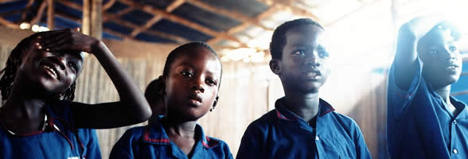
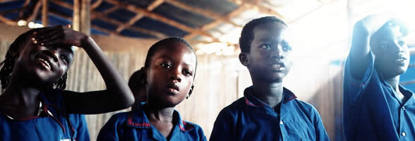

A Rudolf Steiner School
Contact UsFreetown, Sierra Leone
“Our highest endeavour must be to develop free human beings who are able of themselves to impart purpose and direction to their lives.”Rudolf Steiner

 



Get involved...
January-March 2006
I still continue to engage senior officials at the Ministry of Education regarding the approval of the school as a government policy. In fact, I have had talks with the Deputy Minister of Education and he continues to show interest. Our main difficulty is that our application file continues to" crawl sluggishly" through the administrative channels.
The school now has a part-time creative arts teacher, Tina Kawa. She is already a trained teacher but currently studying for a diploma in HIV/AIDS counselling.
We also continue to look for suitable land to purchase or lease (for 100 years!) and the school advisory board is working on this.
Visitors
We shall be receiving Nana Gobel and Mrs. Schiller from Germany from May 17-15, 2006.
Elaine Holt, from the Ringwood Waldorf School, Herts UK, will be in Sierra Leone for two weeks (May 15-26). Note that Elaine is a lecturer at the London Waldorf Teacher Training Seminar, where Kelly and I studied Waldorf education. It is my pleasure to have her in Sierra Leone so that others will benefit from her fantastic painting lessons, etc.
Goals
Short Term
- Get government approval for the existence of the school as an independent school.
- Teaching and Learning Materials: We will engage in making our own exercise books.
Medium Term
- Make local necklaces, bracelets and African dresses to be sold abroad for fundraising to meet our running/other costs.
- Building of a makeshift classroom near the current building to accommodate class 5 by September, 2006.
Long Term
- Finding experienced Waldorf teachers from abroad who will volunteer to train our teachers for one month (preferably August) every year.
- Land and school building.